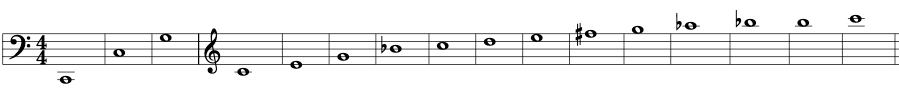
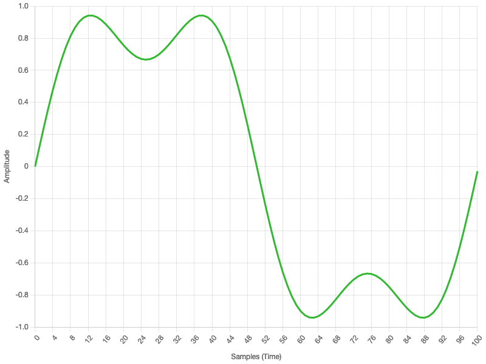

An Introduction to
Synthesis
What we'll cover...
- What is Sound?
- Where Math meets Music
- How to model sound in code
- Synthesis techniques
What is Sound?
- Longitudinal wave
- Travelling at 343 m/s in air
- Produced by vibration
Sound is Vibration
- cycles per second = Frequency
- Measured in Hertz (hz)
- We can hear 20hz-20,000hz
Apple M1 CPU Clock = 3,200,000,000hz
Hydrogen = 3,287,870,000,000,000hz
A4
- When 440 78.41cm longitudinal waves travelling at 770 miles an hour hit your eardrums every second, you perceive a note called A4
Example: C2 (65.4hz)
| Overtone |
Frequency (hz) |
| 1 |
65.40 |
| 2 |
130.8 |
| 3 |
196.2 |
| 4 |
261.6 |
| 5 |
327.0 |
| 6 |
392.4 |
| 7 |
457.8 |
| 8 |
523.2 |
Example: C2 (65.4hz)
| Overtone |
Frequency (hz) |
| 9 |
588.7 |
| 10 |
654.1 |
| 11 |
719.5 |
| 12 |
784.9 |
| 13 |
850.3 |
| 14 |
915.7 |
| 15 |
981.1 |
| 16 |
1046.5 |

- Bb, F# and A# are... wrong...
- Breaks if we modulate to another key!
Equal Temperament
- Divide the octave into 12 equal steps
- Developed to play any key equally well
| Note | Frequency (Hz) | Wavelength (cm) |
|---|
| C0 | 16.35 |
2109.89 |
| C#0/Db0 |
17.32 |
1991.47 |
| D0 | 18.35 |
1879.69 |
| D#0/Eb0 |
19.45 |
1774.20 |
| E0 | 20.60 |
1674.62 |
| F0 | 21.83 |
1580.63 |
| F#0/Gb0 |
23.12 |
1491.91 |
| G0 | 24.50 |
1408.18 |
| Note | Frequency (Hz) | Wavelength (cm) |
|---|
| G#0/Ab0 |
25.96 |
1329.14 |
| A0 | 27.50 |
1254.55 |
| A#0/Bb0 |
29.14 |
1184.13 |
| B0 | 30.87 |
1117.67 |
| C1 | 32.70 |
1054.94 |
| C#1/Db1 |
34.65 |
995.73 |
| D1 | 36.71 |
939.85 |
| D#1/Eb1 |
38.89 |
887.10 |
| Note | Frequency (Hz) | Wavelength (cm) |
|---|
| E1 | 41.20 |
837.31 |
| F1 | 43.65 |
790.31 |
| F#1/Gb1 |
46.25 |
745.96 |
| G1 | 49.00 |
704.09 |
| G#1/Ab1 |
51.91 |
664.57 |
| A1 | 55.00 |
627.27 |
| A#1/Bb1 |
58.27 |
592.07 |
| B1 | 61.74 |
558.84 |
| Note | Frequency (Hz) | Wavelength (cm) |
|---|
| C2 | 65.41 |
527.47 |
| C#2/Db2 |
69.30 |
497.87 |
| D2 | 73.42 |
469.92 |
| D#2/Eb2 |
77.78 |
443.55 |
| E2 | 82.41 |
418.65 |
| F2 | 87.31 |
395.16 |
| F#2/Gb2 |
92.50 |
372.98 |
| G2 | 98.00 |
352.04 |
| Note | Frequency (Hz) | Wavelength (cm) |
|---|
| G#2/Ab2 |
103.83 |
332.29 |
| A2 | 110.00 |
313.64 |
| A#2/Bb2 |
116.54 |
296.03 |
| B2 | 123.47 |
279.42 |
| C3 | 130.81 |
263.74 |
| C#3/Db3 |
138.59 |
248.93 |
| D3 | 146.83 |
234.96 |
| D#3/Eb3 |
155.56 |
221.77 |
| Note | Frequency (Hz) | Wavelength (cm) |
|---|
| E3 | 164.81 |
209.33 |
| F3 | 174.61 |
197.58 |
| F#3/Gb3 |
185.00 |
186.49 |
| G3 | 196.00 |
176.02 |
| G#3/Ab3 |
207.65 |
166.14 |
| A3 | 220.00 |
156.82 |
| A#3/Bb3 |
233.08 |
148.02 |
| B3 | 246.94 |
139.71 |
| Note | Frequency (Hz) | Wavelength (cm) |
|---|
| C4 | 261.63 |
131.87 |
| C#4/Db4 |
277.18 |
124.47 |
| D4 | 293.66 |
117.48 |
| D#4/Eb4 |
311.13 |
110.89 |
| E4 | 329.63 |
104.66 |
| F4 | 349.23 |
98.79 |
| F#4/Gb4 |
369.99 |
93.24 |
| G4 | 392.00 |
88.01 |
| Note | Frequency (Hz) | Wavelength (cm) |
|---|
| G#4/Ab4 |
415.30 |
83.07 |
| A4 | 440.00 |
78.41 |
| A#4/Bb4 |
466.16 |
74.01 |
| B4 | 493.88 |
69.85 |
| C5 | 523.25 |
65.93 |
| C#5/Db5 |
554.37 |
62.23 |
| D5 | 587.33 |
58.74 |
| D#5/Eb5 |
622.25 |
55.44 |
| Note | Frequency (Hz) | Wavelength (cm) |
|---|
| E5 | 659.25 |
52.33 |
| F5 | 698.46 |
49.39 |
| F#5/Gb5 |
739.99 |
46.62 |
| G5 | 783.99 |
44.01 |
| G#5/Ab5 |
830.61 |
41.54 |
| A5 | 880.00 |
39.20 |
| A#5/Bb5 |
932.33 |
37.00 |
| B5 | 987.77 |
34.93 |
| Note | Frequency (Hz) | Wavelength (cm) |
|---|
| C6 | 1046.50 |
32.97 |
| C#6/Db6 |
1108.73 |
31.12 |
| D6 | 1174.66 |
29.37 |
| D#6/Eb6 |
1244.51 |
27.72 |
| E6 | 1318.51 |
26.17 |
| F6 | 1396.91 |
24.70 |
| F#6/Gb6 |
1479.98 |
23.31 |
| G6 | 1567.98 |
22.00 |
| Note | Frequency (Hz) | Wavelength (cm) |
|---|
| G#6/Ab6 |
1661.22 |
20.77 |
| A6 | 1760.00 |
19.60 |
| A#6/Bb6 |
1864.66 |
18.50 |
| B6 | 1975.53 |
17.46 |
| C7 | 2093.00 |
16.48 |
| C#7/Db7 |
2217.46 |
15.56 |
| D7 | 2349.32 |
14.69 |
| D#7/Eb7 |
2489.02 |
13.86 |
| Note | Frequency (Hz) | Wavelength (cm) |
|---|
| E7 | 2637.02 |
13.08 |
| F7 | 2793.83 |
12.35 |
| F#7/Gb7 |
2959.96 |
11.66 |
| G7 | 3135.96 |
11.00 |
| G#7/Ab7 |
3322.44 |
10.38 |
| A7 | 3520.00 |
9.80 |
| A#7/Bb7 |
3729.31 |
9.25 |
| B7 | 3951.07 |
8.73 |
| Note | Frequency (Hz) | Wavelength (cm) |
|---|
| C8 | 4186.01 |
8.24 |
| C#8/Db8 |
4434.92 |
7.78 |
| D8 | 4698.63 |
7.34 |
| D#8/Eb8 |
4978.03 |
6.93 |
| E8 | 5274.04 |
6.54 |
| F8 | 5587.65 |
6.17 |
| F#8/Gb8 |
5919.91 |
5.83 |
| G8 | 6271.93 |
5.50 |
| Note | Frequency (Hz) | Wavelength (cm) |
|---|
| G#8/Ab8 |
6644.88 |
5.19 |
| A8 | 7040.00 |
4.90 |
| A#8/Bb8 |
7458.62 |
4.63 |
| B8 | 7902.13 |
4.37 |
Calculating frequency
\[\begin{aligned}
f_n = f_0 \cdot a^n \\
\end{aligned} \]
// Constants
const concert_pitch_hz = 440.0;
const equal_temperament_steps = 12;
const A = Math.pow(2, 1 / equal_temperament_steps);
function frequency(steps) {
return concert_pitch_hz * Math.pow(A, steps)
}
Sampling
- Converting analog to digital
- How to model an infinite series of points?
- Array of amplitude values
- Pulse Code Modulation
- Tradeoff: quality vs. size
var amplitudes = [];
for(n of [0, 0.5, 1, 1.5, 2]) {
amplitudes.push(Math.sin(n * Math.PI))
}
Pulse Code Modulation
var freq_hz = 440; // A4
var sample_rate = 44100; // CD Quality
var increment = freq_hz / sample_rate;
var phase = 0.0;
var pcm_data = [];
// Fill a 1 second buffer
for (var i = 0; i < sample_rate; i++) {
pcm_data[i] = Math.sin(phase * TAU);
phase = (phase + increment) % 1.0;
}
WebAudio API
var audioCtx = window.AudioContext;
// This is the AudioNode to use
var source = audioCtx.createBufferSource();
// create a 1 second PCM audio buffer at 44100hz
source.buffer = audioCtx.createBuffer(1, 44100, 41000);
var pcm_data = source.buffer.getChannelData(0);
fillBuffer(pcm_data)
// connect the AudioBufferSourceNode to the
// destination so we can hear the sound
source.connect(audioCtx.destination);
// start the source playing
source.start();
Synthesis
- We want to make other sounds!
- Synthesis = taking multiple things to synthesise something else
- Additive
- Frequency Modulation
- Pulse modulation, Subtractive...
Additive synthesis
- Fourier: an infinite number of waves can be made by mixing pure sine waves
- Any sound can be analysed and sorted out into component sine waves
- Add up the amplitude of mutliple sine waves
- Will get louder!

The square wave is the fundamental and its uneven harmonics (1,3,5..)
Additive Synthesis
var harmonics = [
{ overtone: 1, phase: 0.0},
{ overtone: 3, phase: 0.0},
{ overtone: 5, phase: 0.0},
];
for(var h = 0; h < harmonics.length; h++) {
var harmonic = harmonics[h];
var increment = (freq_hz * harmonic.overtone) / sample_rate;
// Additive Synthesis
for (var i = 0; i < pcm_data.length; i++) {
pcm_data[i] += (Math.sin(harmonic.phase * TAU) / harmonic.overtone);
harmonic.phase = (harmonic.phase + increment) % 1.0;
}
}
Frequency Modulation (FM)
- Chowning discovered that the FM technique of carrying sound for radio stations could be applied to synthesis
- Use one sine wave (modulator) to modulate another (carrier)
- Modulator rapidly increases/descreases the frequency
- Adds vibrato
- Eventually changes timbre - Sidebands
Frequency Modulation
\[\begin{aligned}
y(t) = \sin(2 \Pi f_c(t) + I \sin(2 \Pi f_m(t)) \\
\end{aligned} \]
Frequency Modulation
var carrier_increment = pulse_hz / sample_rate;
var carrier_phase = 0.0;
var mod_increment = mod_freq / sample_rate;
var mod_phase = 0.0;
var mod_amount = 1;
// FM Synth
for (var i = 0; i < pcm_data.length; i++) {
pcm_data[i] = Math.sin(phase * TAU + mod_amount * Math.sin(TAU * mod_phase));
phase = (phase + carrier_increment) % 1.0;
mod_phase = (mod_phase + mod_increment) % 1.0;
}